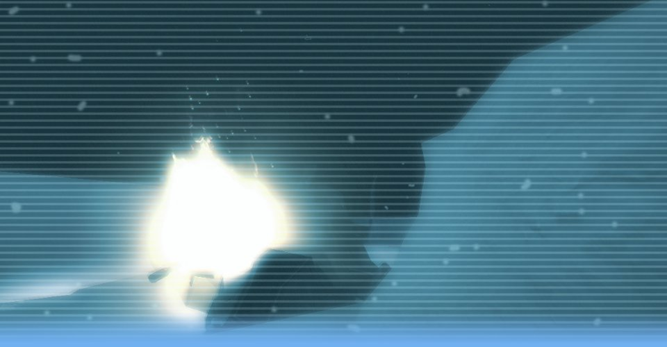

Level Design


Boreas' Sanctum
We're stranded. Alone. With only a planet of hostile aliens for company!
A three level campaign for the free to play co-op game Alien Swarm. Please not that I made this while still learning mapping, it is not fully tested and contains known bugs.
This campaign is placed here for reference only and I will not provide support for it.
Map info: The Boreas Colony is one of SynTek’s latest projects, on a bleak frozen world far beyond the civilized Core Systems. But while on a routine supply run carrying construction materials to the colony, the small IAF escort squad lose contact with the base. Suddenly, an impact on the hull sends the cargo ship spiralling out of control…Released: 2011